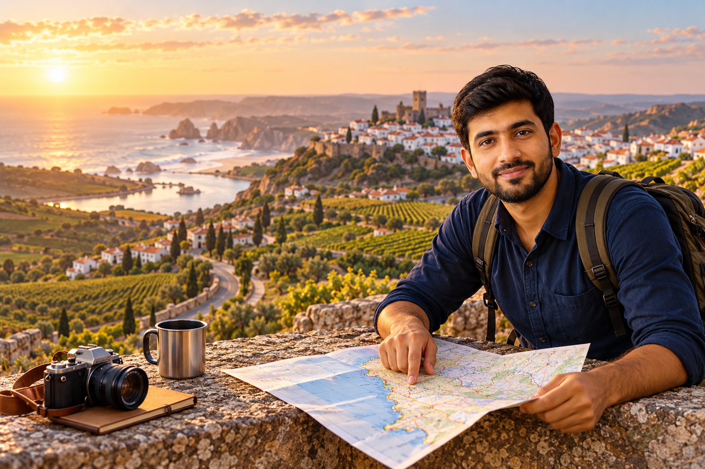

Portugal 14-Day Itinerary for First-Time Visitors

Two weeks gives you enough time to see several sides of Portugal without treating every day like a race. The problem is that 14 days can also tempt first-time visitors to add too many places. Porto, Braga, Guimarães, Coimbra, Lisbon, Sintra, Cascais, Évora, the Algarve, and several small towns may all sound possible. Once travel time and hotel changes are added, the route can become much busier than expected.
When I build a two-week Portugal itinerary for RoamPlans, I focus on regional variety with controlled hotel changes. This route starts in Porto, uses Coimbra as one worthwhile overnight stop, continues to Lisbon, adds Sintra and Évora without changing hotels, and finishes with several nights in Lagos. You get northern Portugal, the Douro Valley, a historic university city, Lisbon, Alentejo history, palaces, and the Algarve coast in one trip.
Portugal 14-Day Itinerary at a Glance
Day
Destination
Main Plan
Sleep
Day 1
Porto
Arrival + historic center
Porto
Day 2
Porto
Full Porto sightseeing day
Porto
Day 3
Douro Valley
Full regional day trip
Porto
Day 4
Porto → Coimbra
University + historic Coimbra
Coimbra
Day 5
Coimbra → Lisbon
Lisbon center + riverfront
Lisbon
Day 6
Lisbon
Alfama + Belém
Lisbon
Day 7
Sintra
Pena Palace + second major site
Lisbon
Day 8
Évora
Full Alentejo day trip
Lisbon
Day 9
Lisbon → Lagos
Travel south + Lagos
Lagos
Day 10
Lagos
Ponta da Piedade + beaches
Lagos
Day 11
Western Algarve
Sagres + Cabo de São Vicente
Lagos
Day 12
Algarve
Coastal or inland Algarve day
Lagos
Day 13
Lagos
Flexible beach and rest day
Lagos
Day 14
Algarve
Final morning + departure
—
This plan assumes 14 usable days and 13 nights.
If Day 1 begins late or Day 14 has an early flight, reduce optional activities. Do not move the whole schedule faster just to protect every stop.
Why This Two-Week Route Works?
The route has four overnight locations:
- Porto: 3 nights
- Coimbra: 1 night
- Lisbon: 4 nights
- Lagos: 5 nights
Only Coimbra is a one-night stop.
It works because Coimbra sits naturally between Porto and Lisbon and has enough historic value to justify breaking the rail trip.
Sintra, Évora, and the Douro Valley remain day trips.
That avoids three additional hotel changes.
What the Extra Four Days Add?
The 10-day itinerary already covers:
- Porto
- Douro Valley
- Lisbon
- Sintra
- Algarve
A 14-day trip should add new value rather than stretch the same places.
The extra time adds:
Coimbra
A historic university city between Porto and Lisbon.
Évora
A full day in Alentejo with Roman, medieval, and religious history.
More Algarve Time
Instead of two fast coastal days, you have enough time for the Lagos coast, Sagres, another regional day, and a flexible day.
Better Pacing
The trip has room for slower afternoons and fewer overloaded days.
Why Coimbra Fits This Route?
Coimbra did not make sense in the shorter itineraries because stopping there would reduce time in Porto or Lisbon.
Two weeks changes that.
Coimbra sits on the north–south route and offers enough for a proper overnight stay.
Its main first-time appeal includes:
- University of Coimbra
- Historic university area
- Old Cathedral
- Medieval streets
- Mondego River
- Student traditions
It also gives the route a useful break between Portugal's two largest city stops.
Why Évora Works as a Day Trip?
Évora does not need another hotel change in this plan.
Lisbon remains your base.
A full day gives you enough time for the city's main historic core, including:
- Roman Temple
- Évora Cathedral
- Praça do Giraldo
- Church of São Francisco
- Chapel of Bones
- Alentejo food
You return to Lisbon in the evening.
This keeps the route simpler while still adding a new region.
Why Lagos Gets Five Nights?
Five nights may look generous compared with the shorter itineraries.
That is intentional.
The Algarve section is not five days of sitting on the same beach.
It gives you time for:
- Lagos
- Ponta da Piedade
- Beach time
- Sagres
- Cabo de São Vicente
- Another regional outing
- One flexible day
By this point, you will have spent more than a week moving through cities and historic sites.
Finishing more slowly makes the route easier to sustain.
What This Route Still Leaves Out?
Even two weeks does not require every major Portugal destination.
Braga and Guimarães
Both can make strong northern day trips, but adding one would mean reducing Porto, Douro, or another part of the route.
For this first visit, the Douro gets the regional day from Porto.
Aveiro
Aveiro is easy to consider because of its position between Porto and Coimbra.
I would still skip it here.
Coimbra has a clearer role in a first two-week route.
Cascais
You already have several nights on the Algarve coast.
A separate Cascais day would repeat part of the coastal experience while taking time from Lisbon.
Óbidos
Óbidos can fit into longer central Portugal routes, but it is not needed for this itinerary to feel complete.
Madeira and the Azores
These require flights and deserve their own time.
Do not add an island region simply because you have two weeks.
Do You Need a Rental Car for 14 Days?
No.
Keeping a rental car through Porto, Coimbra, and Lisbon creates unnecessary parking and city-driving costs.
A better setup is:
Porto
No car needed for the main city plan.
Douro Valley
Use a tour, train-based plan, or other arranged transport.
Coimbra
Train works naturally.
Lisbon, Sintra and Évora
Train and other public transport can cover the main route.
Algarve
This is where a short rental becomes useful.
A car can help with:
- Sagres
- Remote beaches
- Smaller towns
- Inland Algarve
- Flexible coastal stops
Rent it only for the days when it improves the plan.
Best Flight Direction
This article uses:
- Arrive in Porto
- Finish in the Algarve
That creates a broad north-to-south route.
Another option is to fly home through Lisbon after the Algarve.
Your flight options should decide the final transport plan.
Do not add a long return to Porto at the end.
Why This Route Starts in Porto?
Starting north has three benefits.
First, Porto and the Douro stay together.
Second, Coimbra sits directly on the route south.
Third, Lisbon becomes the center point before the final Algarve section.
The order is easy to understand:
Porto → Coimbra → Lisbon → Algarve
The day trips branch from those locations rather than creating major detours.
Day 1: Arrive in Porto
Day 1 should give you a clear first impression of Porto without using up the sights planned for tomorrow.
Use a compact route:
Aliados → São Bento → Cathedral area → Ribeira
This works well if you arrive with several useful afternoon hours.
Leave Your Luggage Before Walking
Go to your accommodation first.
If your room is not ready, ask whether the hotel can hold your bags.
Porto has hills, steps, and cobbled streets.
Carrying travel luggage through the historic center will make the first day harder than necessary.
Begin Around Aliados
Start around Avenida dos Aliados.
This gives you a central reference point before you move downhill.
You do not need to stay long.
Use it as the beginning of your first Porto walk.
Stop at São Bento Station
Continue to São Bento.
The station's tiled interior makes it worth a short visit even if you are not taking a train from here.
Spend some time in the main hall and then continue.
Walk Through the Cathedral Area
Move toward Porto Cathedral.
From the higher streets, you begin to understand how Porto slopes toward the Douro.
If you arrived early and still have energy, spend more time here.
If your flight was long, keep moving toward the river.
Finish in Ribeira
End the main sightseeing portion of Day 1 beside the Douro.
Use the area for:
- River views
- Easy walking
- Coffee
- Dinner
- First look across to Gaia
Do not add a formal evening tour.
Tomorrow is your main Porto day.
Day 1 Summary
Part of Day
Plan
Arrival
Airport → accommodation
First stop
Aliados
Next
São Bento
Later
Cathedral area
Late afternoon
Ribeira
Evening
Dinner by the river or nearby
Sleep
Porto
Day 2: Full Porto Day
Day 2 fills in the major Porto areas that were intentionally left out yesterday.
A practical route is:
Bolhão → Santa Catarina → Clérigos → Carmo → Gaia
The day moves from the upper center toward the Douro without repeated cross-city transfers.
Start at Bolhão
Begin around Mercado do Bolhão.
You can use the morning for:
- Coffee
- Breakfast
- Regional products
- Food stalls
- Market activity
Keep the visit natural.
There is no need to create a formal food tour unless that is one of your priorities.
Continue Along Santa Catarina
Walk along Rua de Santa Catarina.
This gives you a mix of:
- Shops
- Cafés
- Tiled buildings
- Active city streets
Capela das Almas can fit as a short stop along this section.
Move Toward Clérigos
Clérigos becomes one of your main late-morning stops.
The tower climb is optional.
Choose it if you want a high city view and are comfortable with the stairs.
Skip it if you would rather keep your energy for later.
Livraria Lello: Visit or Skip?
Include it if:
- Historic bookstores interest you
- Architecture is one of your main interests
- You specifically want to see the interior
Skip it if you are adding it only because it appears on famous Porto lists.
Your two-week trip has enough strong experiences without treating every well-known attraction as mandatory.
Walk Through the Carmo Area
Continue through the streets around Carmo.
This part of the day works best without too many scheduled entrances.
Give yourself time to notice smaller streets and architecture between the larger sights.
Lunch in Central Porto
Use lunch to try something local.
Options may include:
- Francesinha
- Cod
- Seafood
- Petiscos
Choose what fits your appetite.
There is no required Porto dish that you must eat to make the trip complete.
Afternoon in Gaia
Cross the Douro and spend the afternoon in Vila Nova de Gaia.
Choose between:
One Port Wine Experience
A good option if you want to learn about:
- Port styles
- Production
- Aging
- Douro wine
- or:
A Flexible Gaia Afternoon
Spend the time along the riverfront, viewpoints, and bridge area without booking a tasting.
Both work.
Tomorrow takes you directly into the Douro Valley, so do not turn today into a long series of wine tastings.
Finish Beside the River
Stay around Gaia or Ribeira for dinner if you want.
This is your final full evening in Porto before the Douro day.
Day 2 Summary
Part of Day
Plan
Morning
Bolhão
Late morning
Santa Catarina + Clérigos
Midday
Carmo
Lunch
Central Porto
Afternoon
Gaia
Evening
Douro riverfront
Sleep
Porto
Day 3: Douro Valley Day Trip
Day 3 moves away from city sightseeing.
Use it for a focused Douro experience rather than trying to cover the entire region.
A balanced first day in the valley can include:
scenic transport + one wine estate + lunch + Pinhão + optional short river trip
That is enough.
Day 3 at a Glance
Part of Day
Plan
Early morning
Leave Porto
Morning
Travel into Douro Valley
Late morning
Wine estate
Lunch
Regional meal
Afternoon
Pinhão
Later
Optional short river experience
Evening
Return to Porto
Sleep
Porto
Tour or Independent Day?
Choose a tour if you want the logistics handled for you.
A typical structured day may combine:
- Transport
- Winery
- Lunch
- Scenic stops
- Pinhão
- River experience
- Choose independent travel if you value:
- More free time
- Scenic rail travel
- Fewer scheduled stops
- Staying longer in one place
For an independent day, Pinhão works well as the main destination.
Keep the Winery Count Low
One proper wine estate is enough.
The point is to understand something about the region rather than move between tasting rooms all day.
Spend the remaining time on:
- Scenery
- Food
- River
- Pinhão
Travelers who do not drink alcohol can still enjoy the Douro without making wine the center of the day.
Return to Porto for Your Final Night
Keep the evening easy.
Have dinner and pack for tomorrow.
Day 4 changes the structure of the trip because you will leave Porto and sleep in Coimbra.
Day 4: Porto to Coimbra
Coimbra is the first new destination that separates this 14-day itinerary from the shorter routes.
Instead of passing through on the way to Lisbon, you will stay overnight and give the city proper time.
A useful sequence is:
Porto → Coimbra → University area → Old Cathedral → historic center → Mondego River
Travel to Coimbra in the Morning
Leave Porto after breakfast.
You do not need an extremely early departure.
The goal is to reach Coimbra with enough time for a full afternoon.
Once you arrive, leave your luggage at the hotel before sightseeing.
Understand Coimbra's Station Setup
Coimbra has more than one rail station used by different services.
Check the station shown on your ticket and how you will continue into the center.
Do this before travel day rather than after arriving with luggage.
Make the University Your Main Attraction
The University of Coimbra is the city's main first-time priority.
The historic university area sits above much of Coimbra and deserves a proper visit.
Depending on your ticket and interests, your visit may include:
- Historic university spaces
- Joanina Library
- Courtyards
- Tower
- Academic buildings
Do not schedule several other major interiors immediately afterward.
Give the university enough time.
Walk Down Through Historic Coimbra
After the university, work your way into the older streets.
This route can include the Old Cathedral area.
The descent also helps you understand how the upper university quarter connects with the lower city.
Spend Time in the Lower Center
Use the late afternoon for:
- Historic streets
- Cafés
- Small shops
- Praça do Comércio area
- Local pastry stop
Coimbra should feel different from Porto.
Do not turn the overnight stop into another rushed checklist.
Walk Near the Mondego River
If time and energy allow, finish near the river.
This gives you a slower end after the university and hills.
Should You See Coimbra Fado?
Coimbra has its own fado tradition linked closely with university culture.
If music is important to you, an evening performance can make sense here.
If not, use the night for dinner and rest.
You leave for Lisbon tomorrow.
Day 4 Summary
Part of Day
Plan
Morning
Porto → Coimbra
Around midday
Hotel + lunch
Afternoon
University of Coimbra
Later
Old Cathedral + historic center
Late afternoon
Mondego River
Evening
Dinner or optional Coimbra fado
Sleep
Coimbra
Why One Night Is Enough Here
Coimbra deserves more than a quick station stop, but this itinerary does not need two full days in the city.
One overnight gives you:
- A useful arrival afternoon
- Evening atmosphere
- A slower morning if needed before Lisbon
That is enough to add Coimbra meaningfully without taking too much time from Lisbon, Évora, or the Algarve.
Tomorrow, the route continues south to Lisbon for the longest city stay of the trip.
Day 9: Lisbon to Lagos
Day 9 begins the final section of your two-week Portugal itinerary.
After Porto, Coimbra, Lisbon, Sintra, and Évora, the Algarve should feel different. The next several days focus less on monuments and more on coast, smaller towns, outdoor time, and a slower pace.
A practical Day 9 plan is:
Lisbon → Lagos → historic center → easy waterfront evening
Day 9 at a Glance
Part of Day
Plan
Morning
Lisbon → Algarve
Early afternoon
Reach Lagos + check in
Afternoon
Lagos historic center
Later
Marina or nearby beach
Evening
Dinner in Lagos
Sleep
Lagos
Travel South in the Morning
Leave Lisbon after breakfast.
You can reach the Algarve by train or coach.
Choose the option that works best with your hotel location and travel date.
If traveling by train to Lagos, your route may include a connection before the final regional section.
Check the complete route before departure.
Do Not Plan a Major Sight on Arrival
Once you reach Lagos, leave your luggage and settle in.
You have five nights based here.
There is no reason to race straight into a boat tour or long coastal walk.
Day 9 should help you get familiar with:
- Lagos center
- Your hotel area
- Marina
- Restaurants
- Local transport
- Nearby beaches
Walk Through Lagos Historic Center
Spend the afternoon inside the old center.
Look for:
- Pedestrian streets
- Small squares
- Historic buildings
- Local shops
- Cafés
- Restaurants
This is a good day to walk without a fixed attraction list.
Add One Easy Coastal Stop
If you arrive with enough time, walk toward the marina, waterfront, or a nearby beach.
Keep it easy.
Save the main cliff experience for tomorrow.
Dinner in Lagos
Your first Algarve dinner can stay near the center.
Seafood and grilled fish are natural choices if they appeal to you.
After several transfer and sightseeing days, an early night may be more useful than another scheduled activity.
Day 10: Ponta da Piedade and Lagos Beaches
Day 10 is your main Lagos coast day.
The focus is not another town.
It is the coastline itself.
A balanced route is:
Ponta da Piedade → coastal walk or boat experience → one beach → Lagos evening
Day 10 at a Glance
Part of Day
Plan
Morning
Ponta da Piedade
Late morning
Walk or boat experience
Lunch
Lagos
Afternoon
Beach
Late afternoon
Free coastal time
Evening
Lagos
Sleep
Lagos
Start at Ponta da Piedade
Ponta da Piedade is one of the strongest reasons to base this itinerary in Lagos.
The coast here includes:
- Golden cliffs
- Rock formations
- Sea arches
- Caves
- Small coves
- Atlantic views
Give the area a full morning rather than fitting it between other towns.
Explore From Land
A land-based visit works well if you enjoy:
- Coastal walking
- Photography
- Viewpoints
- Flexible timing
The cliff-top paths give you a broad view of the rock formations and sea.
Stay on marked routes and respect barriers near cliff edges.
Or See the Coast From the Water
A small boat trip gives you a different view.
From sea level, the formations feel very different from the clifftop.
Choose this if caves and rock passages are among your main Algarve interests.
You do not need several separate water activities on the same day.
What About Kayaking?
Kayaking works for travelers who want a more active coastal experience.
Choose it based on:
- Sea conditions
- Weather
- Your comfort on the water
- Your physical ability
If conditions are not suitable, use the land or boat option instead.
Choose One Main Beach
After lunch, spend the afternoon at one beach rather than moving between several.
Useful Lagos-area choices include:
Praia do Camilo
Good for dramatic cliff scenery and a smaller beach setting.
Access involves many steps.
Praia Dona Ana
Another strong choice close to Lagos with rock formations around the beach.
Porto de Mós
Better if you want a broader beach and more room.
Meia Praia
Useful for a long sandy stretch and a more open setting.
Pick based on how you want to spend the afternoon.
Do Not Turn Beach Time Into Sightseeing
If you find a beach you like, stay.
You do not need to visit four beaches simply because they are nearby.
This is one of the points where the 14-day itinerary should feel easier than your first week.
Day 11: Sagres and Cabo de São Vicente
Day 11 moves west.
Sagres gives you a different coastal setting from Lagos.
The cliffs feel more exposed, the Atlantic becomes the main feature, and the area carries strong links with Portugal's maritime past.
A useful route is:
Lagos → Sagres → Sagres Fortress → lunch → Cabo de São Vicente → Lagos
Day 11 at a Glance
Part of Day
Plan
Morning
Lagos → Sagres
Late morning
Sagres Fortress
Lunch
Sagres
Afternoon
Cabo de São Vicente
Later
One optional coastal stop
Evening
Return to Lagos
Sleep
Lagos
Consider a Car for This Day
A rental car gives you more flexibility here than it did in Lisbon or Porto.
You can control:
- Departure time
- Scenic stops
- Beach access
- Cape visit
- Return time
If you do not want to drive, check organized tours or public transport that suit your date.
There is no reason to rent a car for the entire trip just because it helps on one Algarve day.
Visit Sagres Fortress
Make the fortress your main historic stop.
The setting is as important as the built site.
Allow time for:
- Ocean views
- Clifftop setting
- Historic context
- Walking
This gives Day 11 a clear identity rather than another beach-only day.
Have Lunch in Sagres
Stop before continuing west.
This gives you a break before the more exposed cape area.
Keep the meal relaxed.
You do not have a long attraction list this afternoon.
Continue to Cabo de São Vicente
The cape gives you broad views over the Atlantic and a very different feel from Lagos.
The area can be windy even when Lagos feels comfortable.
Carry a light layer.
Do not move beyond safety barriers for photographs.
Add Only One Optional Stop
If you have a car and plenty of daylight, add one beach or coastal stop on the return.
One is enough.
Your Day 11 value comes from Sagres and the cape, not from collecting every viewpoint between them and Lagos.
Day 12: Silves and Monchique
Day 12 changes direction away from the water.
This is the day that keeps the Algarve section from becoming five versions of the same coastal experience.
Silves gives you historic Algarve, while Monchique gives you hills, inland scenery, and a small-town setting.
A useful route is:
Lagos → Silves → lunch → Monchique → scenic stop → Lagos
Day 12 at a Glance
Part of Day
Plan
Morning
Lagos → Silves
Late morning
Silves Castle + old town
Lunch
Silves or Monchique area
Afternoon
Monchique
Later
Hill viewpoint if practical
Evening
Return to Lagos
Sleep
Lagos
Start in Silves
Silves has a very different history from the resort side of the Algarve.
The town was an important center during the period of Muslim rule in southern Portugal.
Its red-toned castle remains the clearest visual reminder of that history.
Visit Silves Castle
Make the castle your main stop.
The walls and elevated position give you views over the surrounding area.
This is a good contrast after several days of Atlantic cliffs and beaches.
Allow time to walk through the site rather than treating it as a short photo stop.
Walk Through the Old Town
After the castle, spend time in the nearby historic streets.
You can include:
- Cathedral area
- Small streets
- Cafés
- Local shops
Silves does not need a packed half-day itinerary.
Its role is to show you another side of the Algarve.
Continue Toward Monchique
After lunch, move inland toward Monchique.
The setting changes again as you enter hill country.
Monchique is known for:
- Whitewashed buildings
- Steep streets
- Green surroundings
- Hill views
- A quieter atmosphere
This works especially well after several days based beside the coast.
Walk Through Monchique
Explore the center on foot.
Keep the route short if the afternoon is warm.
The streets can be steep.
Use the time for:
- Town views
- Coffee
- Local products
- Slow walking
Do not search for a long list of attractions.
The change of setting is the experience.
Add a High Viewpoint Only if It Fits
If you have a car, good visibility, and enough time, you can continue toward a higher viewpoint in the Monchique hills.
Do not force it if:
- Clouds reduce visibility
- The day is already running late
- You are tired
- Road conditions make you uncomfortable
Return to Lagos when the day feels complete.
Why This Inland Day Is Worth Adding
A two-week itinerary should show you more than Portugal's most photographed places.
Silves and Monchique add:
- Islamic-era history
- Inland Algarve
- Hill towns
- Agricultural countryside
- A break from beaches
That gives Day 12 a clear purpose.
Day 13: Keep One Day Flexible
Day 13 is intentionally not packed.
By this point, you have completed 12 active days across northern, central, and southern Portugal.
Use today based on what you want more of.
Option 1: Full Beach Day
Return to your favorite Lagos beach.
There is nothing inefficient about spending most of the day in one place.
A two-week trip has room for rest.
Option 2: Another Coastal Walk
Choose a section you did not explore properly on Day 10.
Keep it focused on walking and scenery rather than another formal tour.
Option 3: Slow Lagos Day
Stay close to your hotel.
You might use the day for:
- Late breakfast
- Shopping
- Marina
- Historic center
- Café
- Long lunch
- Sunset walk
This is often the best option after several day trips.
Option 4: Add an Algarve Experience You Skipped
If one activity was cancelled earlier because of weather or sea conditions, Day 13 can become your backup day.
This is one of the advantages of not filling every day before the trip.
Do Not Use Day 13 to Cross the Entire Algarve
Avoid the temptation to suddenly add several eastern Algarve stops because you have an open day.
A long out-and-back trip would change the relaxed finish of this itinerary.
If eastern Algarve is a major priority, it deserves a route designed around that region rather than a rushed final-day visit.
Day 14: Departure Day
Day 14 belongs to your flight schedule.
Do not make an important attraction depend on this morning.
Early Departure
Check out and travel directly toward the airport or station.
Day 13 was your final sightseeing day.
Afternoon Departure
Use the morning for something close to Lagos.
Good choices include:
- Breakfast
- Marina
- Short old-town walk
- Coffee
- Small shopping stop
Stay close to your luggage.
Evening Departure
You may have more free time, but keep the final activity simple.
A short beach visit or lunch is safer than a distant excursion.
If You Fly From Faro
Allow enough time to travel from Lagos to Faro Airport.
Your hotel being in the Algarve does not mean the airport is next door.
If You Fly From Lisbon
The final route needs more care.
For an early Lisbon flight, I would not plan to leave Lagos on the same morning.
A safer option can be returning to Lisbon on Day 13 and spending the last night there.
That reduces your Lagos stay by one night, but it protects the international flight.
Complete Portugal 14-Day Itinerary
Here is the full route in one place:
- Day
- Destination
- Main Experience
- Sleep
- 1
- Porto
- Historic center + Ribeira
- Porto
- 2
- Porto
- Central Porto + Gaia
- Porto
- 3
- Douro Valley
- Wine region + Pinhão
- Porto
- 4
- Coimbra
- University + historic center
- Coimbra
- 5
- Lisbon
- Baixa + Chiado
- Lisbon
- 6
- Lisbon
- Alfama + Belém
- Lisbon
- 7
- Sintra
- Pena Palace + Quinta da Regaleira
- Lisbon
- 8
- Évora
- Historic Évora + Alentejo
- Lisbon
- 9
- Lagos
- Algarve arrival + old town
- Lagos
- 10
- Lagos Coast
- Ponta da Piedade + beach
- Lagos
- 11
- Western Algarve
- Sagres + Cabo de São Vicente
- Lagos
- 12
- Inland Algarve
- Silves + Monchique
- Lagos
- 13
- Lagos
- Flexible coastal or rest day
- Lagos
- 14
- Algarve
- Departure
- —
What Makes This a Two-Week Route
This itinerary gives you:
- 4 overnight bases
- Porto and northern Portugal
- Douro Valley
- Coimbra
- Lisbon
- Sintra
- Évora and Alentejo
- Lagos
- Western Algarve
- Inland Algarve
- One flexible day
The extra four days do more than extend the 10-day itinerary.
They add new regional experiences and create better pacing.
How Much Time Does Each Region Get?
Porto and Douro: 3 Nights
Enough for:
- Porto arrival
- Full city day
- Douro Valley
Coimbra: 1 Night
Enough for:
- University
- Old city
- Evening atmosphere
Lisbon Region: 4 Nights
Enough for:
- Central Lisbon
- Full city day
- Sintra
- Évora
Algarve: 5 Nights
Enough for:
- Lagos
- Ponta da Piedade
- Sagres
- Cabo de São Vicente
- Silves
- Monchique
- Beach time
- Flexible final day
This distribution keeps the trip moving without making every day a transfer.
Who Should Use This 14-Day Itinerary?
This route works well for first-time visitors who want:
- Historic cities
- Regional variety
- Wine country
- Palaces
- Coastal scenery
- Some slower travel days
It is especially useful if you prefer seeing several parts of mainland Portugal without taking domestic flights.
How to Change the Route for Your Interests
If You Prefer Cities
Reduce Lagos by one or two nights.
Use the time for:
- More Porto
- More Lisbon
- Another central Portugal stop
If Beaches Matter Most
Keep the five Lagos nights and remove Coimbra or Évora if you want even more Algarve time.
If You Do Not Drink Wine
The Douro Valley can still work for scenery, food, river travel, and small towns.
If those do not interest you either, keep another day in Porto.
If You Want a Slower Trip
Remove Évora or the Silves–Monchique day.
Use that day with no major transport.
The trip will still cover Portugal well.
If You Do Not Want to Drive
Porto, Coimbra, Lisbon, Sintra, and Évora can work without a car.
In the Algarve, stay focused on Lagos and use tours or public transport for wider trips.
Skip any difficult-to-reach stop instead of renting a car you do not want to drive.
10 Days vs 14 Days in Portugal
The longer itinerary changes more than the total number of nights.
10 Days
14 Days
Porto
Porto
Douro Valley
Douro Valley
Lisbon
Coimbra
Sintra
Lisbon
Algarve
Sintra
—
Évora
—
Algarve
Faster southern section
More Algarve variety
3 main bases
4 overnight bases
Limited flexibility
Dedicated flexible day
Four extra days give you central Portugal, Alentejo, inland Algarve, and more breathing room.
What Should You Book Before the Trip?
Secure the parts that control the route first:
- International flights
- Porto accommodation
- Coimbra accommodation
- Lisbon accommodation
- Lagos accommodation
- Main intercity trains
- Pena Palace entry
- Douro experience if required
- High-priority Algarve boat activity
- Short Algarve car rental if needed
Leave ordinary meals, beach time, and Day 13 mostly flexible.
Frequently Asked Questions About a 14-Day Portugal Itinerary
Is 14 days enough for Portugal?
Yes. Two weeks gives first-time visitors enough time for Porto, the Douro Valley, Coimbra, Lisbon, Sintra, Évora, and several Algarve experiences without changing hotels every day.
How many places should I stay during two weeks in Portugal?
Four overnight bases work well for this route: Porto, Coimbra, Lisbon, and Lagos. Sintra, Évora, and the Douro Valley are handled without extra hotel changes.
Is Coimbra worth adding to a 14-day Portugal itinerary?
Yes, especially on a north-to-south route. It sits naturally between Porto and Lisbon and adds university history and a smaller-city experience.
Is Évora worth a day trip from Lisbon?
Yes, if Roman history, medieval streets, religious architecture, and Alentejo culture interest you. It adds a very different day from Lisbon or Sintra.
How many days should I spend in the Algarve during a two-week trip?
Around five nights works well in this itinerary. It gives you Lagos, the western coast, an inland day, and time to slow down before departure.
Is five nights in Lagos too much?
Not if Lagos is your base for several different experiences. The itinerary uses it for the local coast, Sagres, Silves, Monchique, beaches, and a flexible day.
Should I stay overnight in Évora?
You can, but this route keeps Lisbon as the base to reduce hotel changes. An overnight becomes more useful if you want to explore more of Alentejo.
Do I need a rental car for two weeks in Portugal?
No. Most of this route can be completed without one. A short Algarve rental may help with Sagres, Silves, Monchique, and less accessible coastal stops.
Should I add Madeira or the Azores to a 14-day mainland trip?
I would treat either island region as a separate trip section that needs several dedicated days. Adding one to this full mainland route would require removing another region.
Should I visit both Sintra and Évora?
Yes, if you have two weeks. They serve different purposes: Sintra focuses on palaces, gardens, and hills, while Évora adds Roman and Alentejo history.
Conclusion
When I build a 14-day Portugal itinerary for a first-time visitor, I use the extra time to add regional depth rather than more rushed stops. Coimbra, Évora, Silves, and Monchique all add something that the shorter routes do not, while Porto, Lisbon, and Lagos still receive enough time to work as proper bases.
The result is a north-to-south route with cities, wine country, university history, palaces, Alentejo heritage, cliffs, beaches, and inland Algarve. Most importantly, Day 13 remains open. After nearly two weeks of travel, having one day that can respond to your energy, weather, or favorite place makes the itinerary stronger than filling every remaining hour.